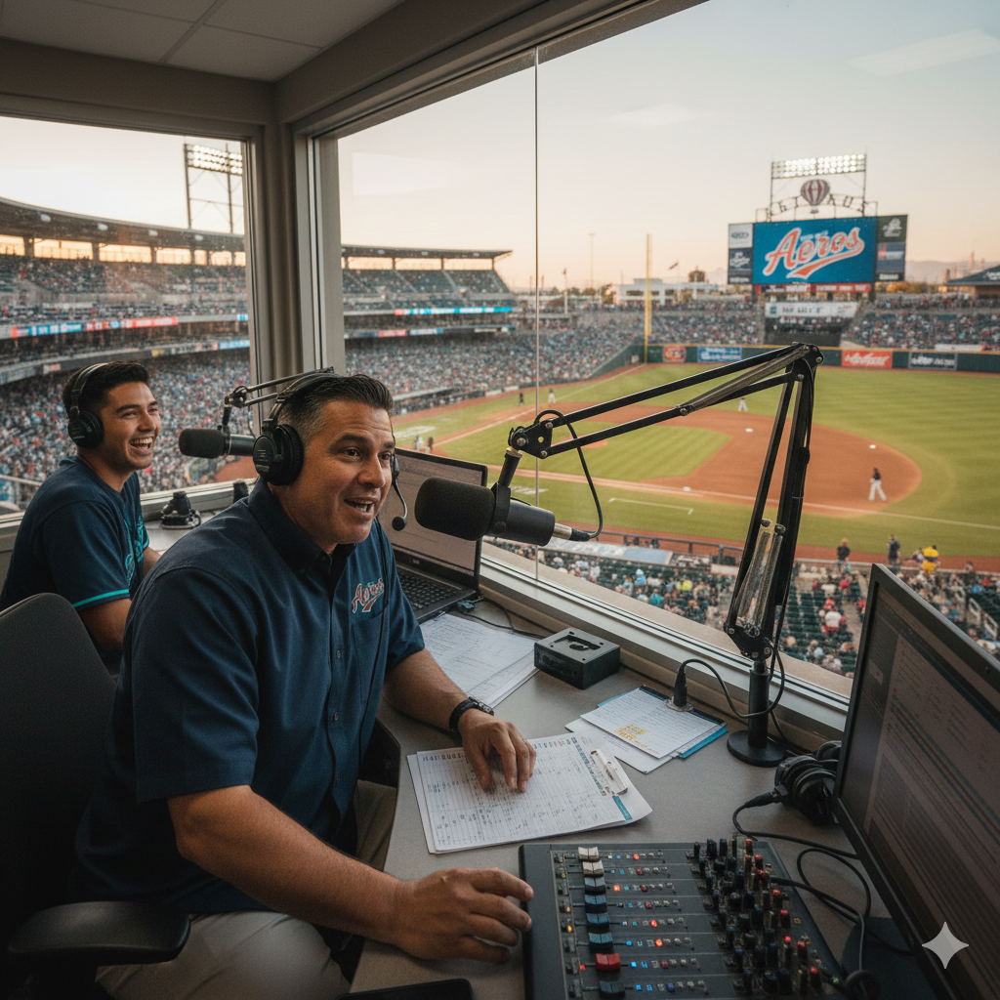
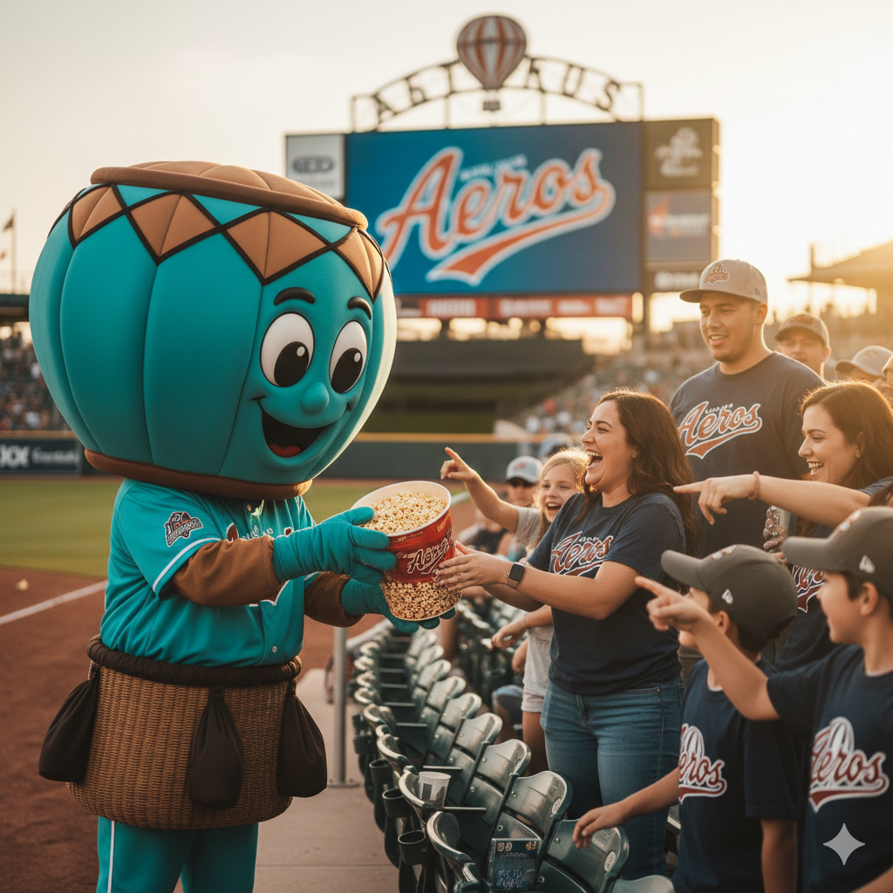

Albuquerque Aeros
Americas DivisionThe Club
The Aeros play in thin air and hard light. In Albuquerque, the ball carries and the sun has no mercy. The club’s identity is velocity — not speed-for-show, but the quiet, engineered kind: quick innings, fast turns, and a relentless preference for the next pitch over the last moment.
- Style: Pressure / Pace
- Vibe: High Desert Lift
- Tradition: "The Countdown"
Ballpark

Propellant Park. A sun-baked bowl with open sightlines to the horizon and a scoreboard that looks like it was borrowed from an airfield. By the late innings the shadows get long, the wind shifts, and fly balls become coin flips.
Broadcast

—
Voice of the Aeros. Dry humor, fast reads, and an unromantic love of mechanics. The booth calls the game like air-traffic control: clear, calm, and always moving.
Mascot & Stands

—
A true in-stadium mascot — loud, physical, and slightly ridiculous. It lives on the rail, high-fiving kids and heckling the visiting bullpen like it’s a job description.

The Launch Row
A sun-facing section that treats the game like a recurring ritual: hats low, drinks cold, and a collective obsession with the next big swing.
Core Roster
| CF | — |
| P | — |
| C | — |